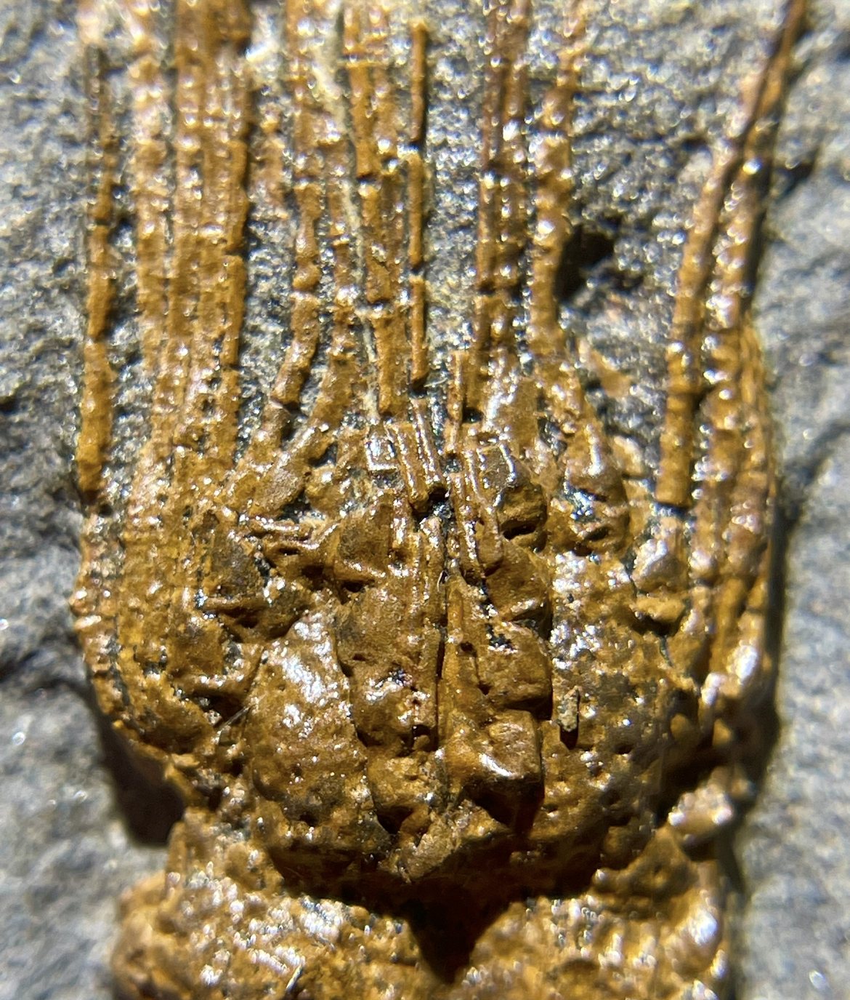
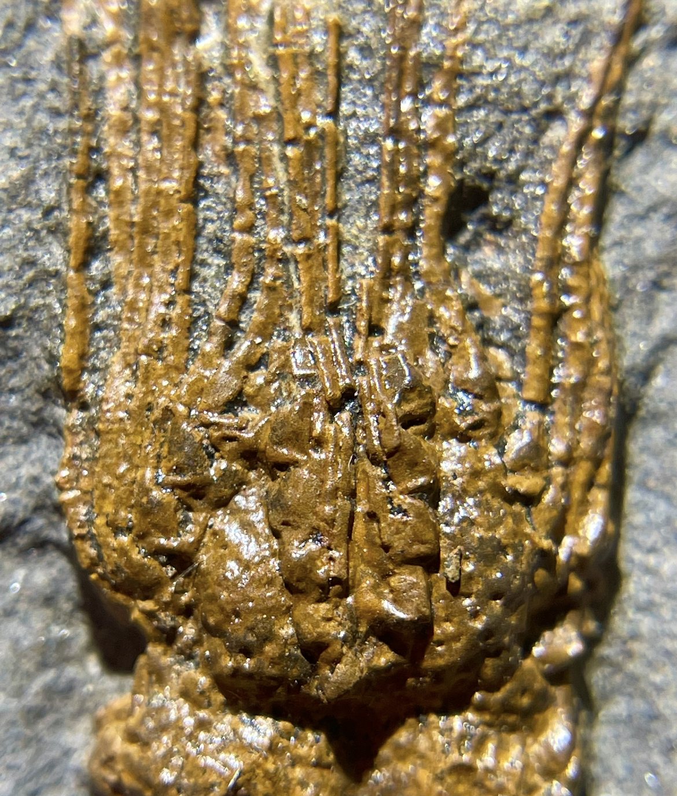

Cystoid
Asterocystis sp.
• Ordovician
• Tiouririne Formation
• Isthlou, near Erfoud, Erracidia Province, Morocco
Size: 1.3 cm theca
Samuel Zamora has identified this specimen as Asterocystis sp., a diploporan cystoid that is still pending description.
An exceptionally-preserved echinoderm from the rich Ordovician deposits of Morocco. Its narrow ambulacral grooves lined with series of accessory plates and filter-feeding brachioles are classic features of certain cystoids. However, the brachioles themselves are rather unusual: extraordinarily long and slender, and constructed from tall, thin "stick-like" components.
 
